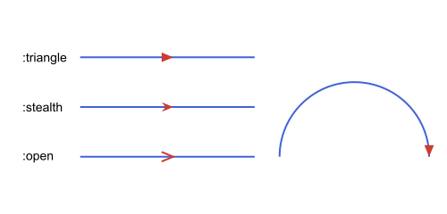
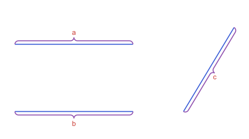

Decorations: Arrowheads & Braces
The arc from Marks, Labels & Decorations:
using Apollonius
circ = APCircle2(APPoint(0.0, 0.0), 5.0)
arc = APCircularArc2(circ, APPoint(5.0, 0.0), APPoint(0.0, 5.0))Arrowheads: arrow_head
path(segment; as=:arrow) puts an arrowhead at the end of a segment, and as=:doublearrow at both ends, and nowhere else. arrow_head places one anywhere on a segment, a line, a ray or an arc, as a shape you draw yourself.
| Keyword | Default | Meaning |
|---|---|---|
at | 0.5 | where along obj |
size | 10.0 | length of each side arm |
angle | π/8 | half the opening angle |
place | :center | :center puts the head's middle on the point, :tip puts its tip there |
style | :triangle | see below |
style | Head | Returns | Draw with |
|---|---|---|---|
:triangle | a filled triangle | APTriangle | action=:fill |
:stealth | a triangle with a notch in the back | APStraightNgon | action=:fill |
:open | two arms, a > | APPolyline2 | action=:stroke |
Use place=:center for an arrow in the middle of a line, and place=:tip with at=1.0 for an arrow at the end of an arc:
head = arrow_head(arc; at=1.0, place=:tip)
isapprox(head[1], arc.p2; atol=1e-9)true
See script
using Apollonius, Luxor
import Luxor: julia_red, julia_blue, julia_green, julia_purple
lxm = @prepare_to_picture! width=500 height=240 margin=20 begin
segs = [APSegment(APPoint(0.0, 2.0 * (3 - i)), APPoint(7.0, 2.0 * (3 - i))) for i in 1:3]
names = [APPoint(-2.5, 2.0 * (3 - i)) for i in 1:3]
arc = APCircularArc2(
APCircle2(APPoint(11.0, 0.0), 3.0),
APPoint(14.0, 0.0),
APPoint(8.0, 0.0))
end
begin
Drawing(lxm.width, lxm.height, :svg)
origin(); fontsize(15)
sethue(julia_blue)
path([segs..., arc], action=:stroke)
sethue(julia_purple)
path(arrow_head(segs[1]; style=:triangle, size=14); action=:fill)
path(arrow_head(segs[2]; style=:stealth, size=14); action=:fill)
path(arrow_head(segs[3]; style=:open, size=14); action=:stroke)
path(arrow_head(arc; at=1.0, place=:tip, size=14); action=:fill)
sethue(julia_red)
for (p, style) in zip(names, (:triangle, :stealth, :open))
label(":" * string(style), :E, p)
end
finish()
preview()
endBraces: brace and brace_anchor
brace(p1, p2) is a curly brace along the segment, height deep (default 10, or half the length if that is smaller) on the side (:left or :right) of p1 → p2. It comes back as its six pieces, four quarter arcs and two straight segments, so path draws it in one call. height cannot exceed half the length, and at that limit the two straight pieces disappear.
b = brace(APPoint(0.0, 0.0), APPoint(100.0, 0.0); height=10.0)
count(x -> x isa APCircularArc2, b), count(x -> x isa APSegment, b)(4, 2)
See script
using Apollonius, Luxor
import Luxor: julia_red, julia_blue, julia_green, julia_purple
lxm = @prepare_to_picture! width=500 height=240 margin=20 begin
s1 = APSegment(APPoint(0.0, 4.0), APPoint(7.0, 4.0))
s2 = APSegment(APPoint(0.0, 0.0), APPoint(7.0, 0.0))
s3 = APSegment(APPoint(10.0, 0.0), APPoint(13.0, 5.0))
end
begin
Drawing(lxm.width, lxm.height, :svg)
origin(); fontsize(15)
sethue(julia_blue)
path([s1, s2, s3], action=:stroke)
sethue(julia_purple)
path(brace(s1.p1, s1.p2; height=14, side=:left); action=:stroke)
path(brace(s2.p1, s2.p2; height=14, side=:right); action=:stroke)
path(brace(s3.p1, s3.p2; height=14, side=:right); action=:stroke)
sethue(julia_red)
label("a", brace_anchor(s1.p1, s1.p2; height=14, side=:left)...)
label("b", brace_anchor(s2.p1, s2.p2; height=14, side=:right)...)
label("c", brace_anchor(s3.p1, s3.p2; height=14, side=:right)...)
finish()
preview()
endbrace_anchor with the same arguments gives the point of the brace and the alignment that puts a label beyond it; see the next section.